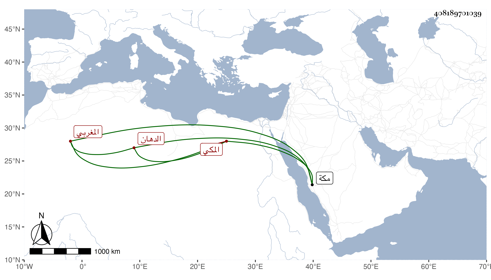

0902Sakhawi.DawLamic.ITO20230111-ara1.EIS1600.408189701039
Biography ID: 408189701039
1
عبد الله بن إبراهيم بن أحمد بن محمد بن عبد الله العفيف بن البرهان المغربي الأصل المكي الدهان الماضي أبوه ويعرف بالزعبلي . سمع من أبي بكر المراغي أشياء وكان كأبيه مباركا منجمعا عن الناس ملازما للجماعة مع بعد منزله ويتكسب بدهن السقوف ونحوها وبالعمر أيام الموسم . مات بمكة في المحرم سنة خمس وثمانين .
